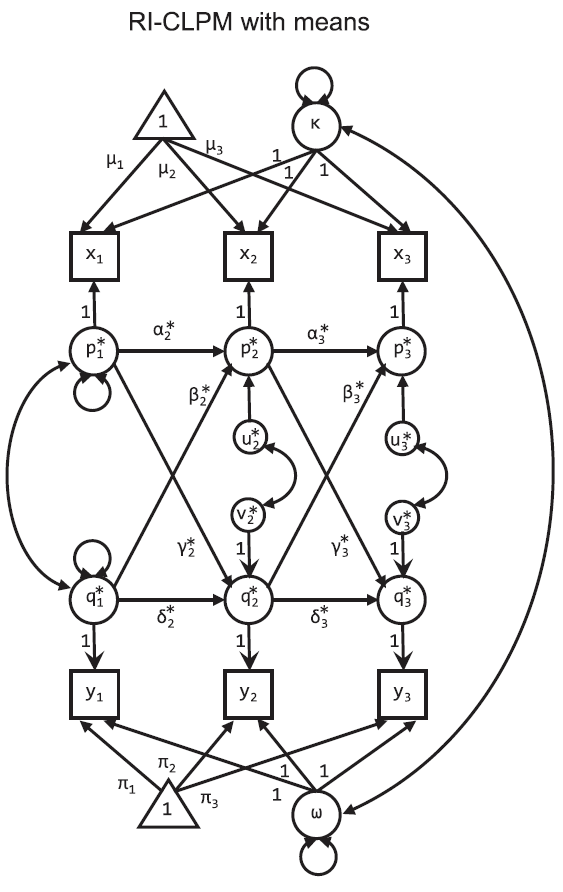

A better cross-lagged panel model, from Hamaker et al. (2015)
Update, 2019-11-11: There are a couple of new bits of code online that could be helpful if you are interested in these models.
- I wrote an R package called
riclpmrthat willlavaangenerate syntax for multivariate RI-CLPMs (and also provides the proper call tolavaanfor estimating it). - Christoph Nhuyen (@cgnguyen_online) wrote a function to generate graphs (path diagrams) for displaying the results from these models.
This walk-through explains, briefly, why and how to run a RI-CLPM in R.
All code and data are available in the github repository
Critique of cross-lagged pannel models
This post summarizes critiques of the traditional cross-lagged panel model (CLPM), and an improved model by Hamaker, Kuiper, and Grasman {% cite hamaker_critique_2015 -A %}.
The primary point Hamaker and colleagues make regarding the CLPM is that it assumes that there are “no trait-like individual differences that endure.” That is, looking at the structure of a CLPM it is clear that individual-level stability must be accounted for entirely by the auto-regressive path between waves. As they put it, it imposes an assumption that there is no between-subject variance of time-invariant, trait-like stability, but only temporal stability, wave to wave, of subjects around the mean score for any particular wave.
RI-CLPM
A key insight of the paper is that “we need to separate the within-person level from the between-person level” (p. 104). The model they propose, the Random Intercept CLPM (RI-CLPM) separates each person’s score on a variable at each wave into the group mean for that wave (\(\mu_{t}, \pi_{t}\)), an individual’s stable score over all waves (the random intercept; \(\kappa_{i}, \omega_{i}\)) and then an individual level deviation at each wave from the score expected by adding the group-wave-mean and individual trait (\(p_{it}, q_{it}\)).
The model looks like this:

Effectively, now, the paths \(\alpha_{t}\) (or \(\delta_{t}\)) between \(p_{it}\) (or \(q_{it}\)) and \(p_{i(t+1)}\) (or \(q_{i(t+1)}\)) no longer capture rank-order stability of individuals, but rather a within-person carry-over effect.
{% quote hamaker_critique_2015 %} If it is positive, it implies that occasions on which a person scored above his or her expected score are likely to be followed by occasions on which he or she still scores above the expected score again, and conversely. (p. 104) {% endquote %}
More importantly, since \(\kappa\) and \(\omega\) separate out individual-level stability, the cross-lagged paths \(\beta_{t}\) and \(\gamma_{t}\) are now straightforward to interpret as the within person effect of one variable on the subsequent measurement of a second variable. This interpretive boost is allowed now because, for example, \(\beta_{t}\) is the estimate of the additional explanatory power of deviations from trait-stable levels on variable \(y_{t}\) on the deviations of the observed variable \(x_{t+1}\) from the group mean and individual trait (\(\mu_{t+1} + \kappa_{i}\)) after accounting for the expected within-person carry-over effect, \(\alpha_{t}\).
See the paper (Figure 2) for a demonstration of how terribly traditional CLPM performs when you have a data generating process that matches the RI-CLPM – that is, when you have stable individual differences.
Implemmenting the RI-CLPM in R
First, make sure we can load the necessary packages. If you haven’t installed them, I’ve included (and commented out) the lines that will allow you to do that. The corresponding git repository is here.
#if you need to install anything, uncomment the below install lines for now
#install.packages('lavaan')
#install.packages('tidyverse')
require(lavaan)
require(tidyverse)Some data
Now, we need some data. I’m using a data set presented on at a methods symposium at SRCD in 1997. Supporting documentation can be found in this pdf. Data and code for importing it was helpfully provided by Sanjay Srivastava.
The variables we’re considering are a measure of antisocial behavior (anti) and reading recognition (read). See the docs for descriptions of the other variables. And for the purpose of the model fitting below, x <- anit and y <- read. Following are some descriptions of the raw data:
antiread <- read.table("srcddata.dat",
na.strings = c("999.00"),
col.names = c("anti1", "anti2", "anti3", "anti4",
"read1", "read2", "read3", "read4",
"gen", "momage", "kidage", "homecog",
"homeemo", "id")
) %>%
rename(x1 = anti1, x2 = anti2, x3 = anti3, x4 = anti4,
y1 = read1, y2 = read2, y3 = read3, y4 = read4) %>%
select(matches('[xy][1-4]'))
knitr::kable(summary(antiread), format = 'markdown')| x1 | x2 | x3 | x4 | y1 | y2 | y3 | y4 | |
|---|---|---|---|---|---|---|---|---|
| Min. :0.000 | Min. : 0.000 | Min. : 0.000 | Min. : 0.000 | Min. :0.100 | Min. :1.600 | Min. :2.200 | Min. :2.500 | |
| 1st Qu.:0.000 | 1st Qu.: 0.000 | 1st Qu.: 0.000 | 1st Qu.: 0.000 | 1st Qu.:1.800 | 1st Qu.:3.300 | 1st Qu.:4.200 | 1st Qu.:4.925 | |
| Median :1.000 | Median : 1.500 | Median : 1.000 | Median : 1.500 | Median :2.300 | Median :4.100 | Median :5.000 | Median :5.800 | |
| Mean :1.662 | Mean : 2.027 | Mean : 1.828 | Mean : 2.061 | Mean :2.523 | Mean :4.076 | Mean :5.005 | Mean :5.774 | |
| 3rd Qu.:3.000 | 3rd Qu.: 3.000 | 3rd Qu.: 3.000 | 3rd Qu.: 3.000 | 3rd Qu.:3.000 | 3rd Qu.:4.900 | 3rd Qu.:5.800 | 3rd Qu.:6.675 | |
| Max. :9.000 | Max. :10.000 | Max. :10.000 | Max. :10.000 | Max. :7.200 | Max. :8.200 | Max. :8.400 | Max. :8.300 | |
| NA | NA’s :31 | NA’s :108 | NA’s :111 | NA | NA’s :30 | NA’s :130 | NA’s :135 |
antiread %>%
select(-x4,-y4) %>%
mutate(pid = 1:n()) %>%
gather(key, value, -pid) %>%
extract(col = key, into = c('var', 'wave'), regex = '(\\w)(\\d)') %>%
ggplot(aes(x = value)) +
geom_density(alpha = 1) +
facet_grid(wave~var, scales = 'free') +
theme_classic()## Warning: Removed 299 rows containing non-finite values (stat_density).
antireadLong <- antiread %>%
select(-x4,-y4) %>%
mutate(pid = 1:n()) %>%
gather(key, value, -pid) %>%
extract(col = key, into = c('var', 'wave'), regex = '(\\w)(\\d)')
antireadLong %>%
ggplot(aes(x = wave, y = value, color = var, group = var)) +
geom_point(position = position_jitter(w = .2), alpha = .1) +
geom_line(stat = 'identity', aes(group = interaction(var, pid)), alpha = .04) +
geom_line(stat = 'smooth', method = 'lm', size = 1) +
theme_classic()## Warning: Removed 299 rows containing non-finite values (stat_smooth).## Warning: Removed 299 rows containing missing values (geom_point).## Warning: Removed 271 rows containing missing values (geom_path).
Fitting a RI-CLPM
In the below lavaan code, I’ll be using the notation from the diagram. I am explicitly specifying everything in the diagram, which is why in the call to lavaan I set a bunch of auto options to false. This is because often lavaan will try to automatically estimate things that you don’t usually write out but often want estimated, like residuals. Because this model is unorthodox, I want to be as explicit as possible.
The lavaan code below uses syntax that can be found in their help docs for the basic stuff as well as the more advanced labeling and constraining.
riclpmModel <-
'
#Note, the data contain x1-3 and y1-3
#Latent mean Structure with intercepts
kappa =~ 1*x1 + 1*x2 + 1*x3
omega =~ 1*y1 + 1*y2 + 1*y3
x1 ~ mu1*1 #intercepts
x2 ~ mu2*1
x3 ~ mu3*1
y1 ~ pi1*1
y2 ~ pi2*1
y3 ~ pi3*1
kappa ~~ kappa #variance
omega ~~ omega #variance
kappa ~~ omega #covariance
#laten vars for AR and cross-lagged effects
p1 =~ 1*x1 #each factor loading set to 1
p2 =~ 1*x2
p3 =~ 1*x3
q1 =~ 1*y1
q2 =~ 1*y2
q3 =~ 1*y3
#Later, we may constrain autoregression and cross-lagged
#effects to be the same across both lags.
p3 ~ alpha3*p2 + beta3*q2
p2 ~ alpha2*p1 + beta2*q1
q3 ~ delta3*q2 + gamma3*p2
q2 ~ delta2*q1 + gamma2*p1
p1 ~~ p1 #variance
p2 ~~ u2*p2
p3 ~~ u3*p3
q1 ~~ q1 #variance
q2 ~~ v2*q2
q3 ~~ v3*q3
p1 ~~ q1 #p1 and q1 covariance
p2 ~~ q2 #p2 and q2 covariance
p3 ~~ q3 #p2 and q2 covariance'
fit <- lavaan(riclpmModel, data = antiread,
missing = 'ML', #for the missing data!
int.ov.free = F,
int.lv.free = F,
auto.fix.first = F,
auto.fix.single = F,
auto.cov.lv.x = F,
auto.cov.y = F,
auto.var = F)
summary(fit, standardized = T)## lavaan (0.5-23.1097) converged normally after 83 iterations
##
## Number of observations 405
##
## Number of missing patterns 14
##
## Estimator ML
## Minimum Function Test Statistic 3.213
## Degrees of freedom 1
## P-value (Chi-square) 0.073
##
## Parameter Estimates:
##
## Information Observed
## Standard Errors Standard
##
## Latent Variables:
## Estimate Std.Err z-value P(>|z|) Std.lv Std.all
## kappa =~
## x1 1.000 1.110 0.671
## x2 1.000 1.110 0.548
## x3 1.000 1.110 0.571
## omega =~
## y1 1.000 0.734 0.794
## y2 1.000 0.734 0.679
## y3 1.000 0.734 0.622
## p1 =~
## x1 1.000 1.226 0.741
## p2 =~
## x2 1.000 1.692 0.836
## p3 =~
## x3 1.000 1.594 0.821
## q1 =~
## y1 1.000 0.562 0.608
## q2 =~
## y2 1.000 0.794 0.734
## q3 =~
## y3 1.000 0.924 0.783
##
## Regressions:
## Estimate Std.Err z-value P(>|z|) Std.lv Std.all
## p3 ~
## p2 (alp3) 0.353 0.078 4.549 0.000 0.374 0.374
## q2 (bet3) -0.274 0.154 -1.788 0.074 -0.137 -0.137
## p2 ~
## p1 (alp2) 0.162 0.169 0.961 0.336 0.118 0.118
## q1 (bet2) -0.090 0.457 -0.196 0.845 -0.030 -0.030
## q3 ~
## q2 (dlt3) 0.738 0.073 10.048 0.000 0.634 0.634
## p2 (gmm3) -0.008 0.034 -0.241 0.810 -0.015 -0.015
## q2 ~
## q1 (dlt2) 0.374 0.350 1.068 0.286 0.265 0.265
## p1 (gmm2) -0.058 0.079 -0.733 0.464 -0.089 -0.089
##
## Covariances:
## Estimate Std.Err z-value P(>|z|) Std.lv Std.all
## kappa ~~
## omega -0.118 0.157 -0.754 0.451 -0.145 -0.145
## p1 ~~
## q1 0.017 0.160 0.107 0.915 0.025 0.025
## .p2 ~~
## .q2 -0.117 0.114 -1.025 0.305 -0.091 -0.091
## .p3 ~~
## .q3 -0.115 0.071 -1.624 0.104 -0.111 -0.111
##
## Intercepts:
## Estimate Std.Err z-value P(>|z|) Std.lv Std.all
## .x1 (mu1) 1.662 0.082 20.217 0.000 1.662 1.005
## .x2 (mu2) 1.985 0.103 19.189 0.000 1.985 0.981
## .x3 (mu3) 1.898 0.107 17.658 0.000 1.898 0.977
## .y1 (pi1) 2.523 0.046 54.925 0.000 2.523 2.729
## .y2 (pi2) 4.066 0.055 74.267 0.000 4.066 3.760
## .y3 (pi3) 5.023 0.064 78.328 0.000 5.023 4.256
## kappa 0.000 0.000 0.000
## omega 0.000 0.000 0.000
## p1 0.000 0.000 0.000
## .p2 0.000 0.000 0.000
## .p3 0.000 0.000 0.000
## q1 0.000 0.000 0.000
## .q2 0.000 0.000 0.000
## .q3 0.000 0.000 0.000
##
## Variances:
## Estimate Std.Err z-value P(>|z|) Std.lv Std.all
## kappa 1.232 0.271 4.550 0.000 1.000 1.000
## omega 0.539 0.177 3.042 0.002 1.000 1.000
## p1 1.504 0.281 5.361 0.000 1.000 1.000
## .p2 (u2) 2.821 0.316 8.929 0.000 0.985 0.985
## .p3 (u3) 2.110 0.204 10.341 0.000 0.830 0.830
## q1 0.316 0.172 1.832 0.067 1.000 1.000
## .q2 (v2) 0.582 0.086 6.811 0.000 0.923 0.923
## .q3 (v3) 0.509 0.046 11.125 0.000 0.596 0.596
## .x1 0.000 0.000 0.000
## .x2 0.000 0.000 0.000
## .x3 0.000 0.000 0.000
## .y1 0.000 0.000 0.000
## .y2 0.000 0.000 0.000
## .y3 0.000 0.000 0.000Comparing fits
RI-CLPM v CLPM
Because the traditional CLPM is nested in the RI-CLPM, we can compare model fit. The correct reference distribution for this comparison is \(\chi^2\) but, as Hamaker and colleagues say
{% quote hamaker_critique_2015 %} However, we can make use of the fact that the regular chi-square difference test is conservative in this context, meaning that, if it is significant, we are certain that the correct (i.e., chi-bar-square difference) test will be significant too. (p. 105) {% endquote %}
We estimate the traditional CLPM by setting the variance and covariance of \(\kappa\) and \(\omega\) to 0.
clpmModel <- #yes, "Model" is redundant
'
#Note, the data contain x1-3 and y1-3
#Latent mean Structure with intercepts
kappa =~ 1*x1 + 1*x2 + 1*x3
omega =~ 1*y1 + 1*y2 + 1*y3
x1 ~ mu1*1 #intercepts
x2 ~ mu2*1
x3 ~ mu3*1
y1 ~ pi1*1
y2 ~ pi2*1
y3 ~ pi3*1
kappa ~~ 0*kappa #variance nope
omega ~~ 0*omega #variance nope
kappa ~~ 0*omega #covariance not even
#laten vars for AR and cross-lagged effects
p1 =~ 1*x1 #each factor loading set to 1
p2 =~ 1*x2
p3 =~ 1*x3
q1 =~ 1*y1
q2 =~ 1*y2
q3 =~ 1*y3
p3 ~ alpha3*p2 + beta3*q2
p2 ~ alpha2*p1 + beta2*q1
q3 ~ delta3*q2 + gamma3*p2
q2 ~ delta2*q1 + gamma2*p1
p1 ~~ p1 #variance
p2 ~~ u2*p2
p3 ~~ u3*p3
q1 ~~ q1 #variance
q2 ~~ v2*q2
q3 ~~ v3*q3
p1 ~~ q1 #p1 and q1 covariance
p2 ~~ q2 #p2 and q2 covariance
p3 ~~ q3 #p2 and q2 covariance'
fitCLPM <- lavaan(clpmModel, data = antiread,
missing = 'ML', #for the missing data!
int.ov.free = F,
int.lv.free = F,
auto.fix.first = F,
auto.fix.single = F,
auto.cov.lv.x = F,
auto.cov.y = F,
auto.var = F)
anova(fit, fitCLPM)## Chi Square Difference Test
##
## Df AIC BIC Chisq Chisq diff Df diff Pr(>Chisq)
## fit 1 6814.1 6918.2 3.2127
## fitCLPM 4 6825.6 6917.7 20.6779 17.465 3 0.0005669 ***
## ---
## Signif. codes: 0 '***' 0.001 '**' 0.01 '*' 0.05 '.' 0.1 ' ' 1The CLPM fits much worse, with no model comparison statistic favoring the CLPM (the BIC advantage of 1 point is negligible). We can print out the standardized estimates to compare to the unconstrained RI-CLPM above.
## lavaan (0.5-23.1097) converged normally after 47 iterations
##
## Number of observations 405
##
## Number of missing patterns 14
##
## Estimator ML
## Minimum Function Test Statistic 20.678
## Degrees of freedom 4
## P-value (Chi-square) 0.000
##
## Parameter Estimates:
##
## Information Observed
## Standard Errors Standard
##
## Latent Variables:
## Estimate Std.Err z-value P(>|z|) Std.lv Std.all
## kappa =~
## x1 1.000 0.000 0.000
## x2 1.000 0.000 0.000
## x3 1.000 0.000 0.000
## omega =~
## y1 1.000 0.000 0.000
## y2 1.000 0.000 0.000
## y3 1.000 0.000 0.000
## p1 =~
## x1 1.000 1.656 1.000
## p2 =~
## x2 1.000 2.024 1.000
## p3 =~
## x3 1.000 1.955 1.000
## q1 =~
## y1 1.000 0.924 1.000
## q2 =~
## y2 1.000 1.082 1.000
## q3 =~
## y3 1.000 1.174 1.000
##
## Regressions:
## Estimate Std.Err z-value P(>|z|) Std.lv Std.all
## p3 ~
## p2 (alp3) 0.559 0.050 11.150 0.000 0.579 0.579
## q2 (bet3) -0.145 0.085 -1.698 0.090 -0.080 -0.080
## p2 ~
## p1 (alp2) 0.538 0.056 9.679 0.000 0.440 0.440
## q1 (bet2) -0.093 0.101 -0.920 0.357 -0.042 -0.042
## q3 ~
## q2 (dlt3) 0.849 0.042 20.402 0.000 0.783 0.783
## p2 (gmm3) -0.016 0.024 -0.677 0.498 -0.028 -0.028
## q2 ~
## q1 (dlt2) 0.763 0.045 16.903 0.000 0.651 0.651
## p1 (gmm2) -0.047 0.025 -1.871 0.061 -0.072 -0.072
##
## Covariances:
## Estimate Std.Err z-value P(>|z|) Std.lv Std.all
## kappa ~~
## omega 0.000 NaN NaN
## p1 ~~
## q1 -0.107 0.076 -1.403 0.161 -0.070 -0.070
## .p2 ~~
## .q2 -0.085 0.077 -1.098 0.272 -0.058 -0.058
## .p3 ~~
## .q3 -0.121 0.071 -1.710 0.087 -0.106 -0.106
##
## Intercepts:
## Estimate Std.Err z-value P(>|z|) Std.lv Std.all
## .x1 (mu1) 1.662 0.082 20.194 0.000 1.662 1.003
## .x2 (mu2) 1.983 0.103 19.189 0.000 1.983 0.980
## .x3 (mu3) 1.902 0.109 17.503 0.000 1.902 0.973
## .y1 (pi1) 2.523 0.046 54.956 0.000 2.523 2.731
## .y2 (pi2) 4.066 0.055 74.277 0.000 4.066 3.759
## .y3 (pi3) 5.023 0.064 78.548 0.000 5.023 4.279
## kappa 0.000 NaN NaN
## omega 0.000 NaN NaN
## p1 0.000 0.000 0.000
## .p2 0.000 0.000 0.000
## .p3 0.000 0.000 0.000
## q1 0.000 0.000 0.000
## .q2 0.000 0.000 0.000
## .q3 0.000 0.000 0.000
##
## Variances:
## Estimate Std.Err z-value P(>|z|) Std.lv Std.all
## kappa 0.000 NaN NaN
## omega 0.000 NaN NaN
## p1 2.742 0.193 14.230 0.000 1.000 1.000
## .p2 (u2) 3.284 0.239 13.726 0.000 0.802 0.802
## .p3 (u3) 2.474 0.206 12.035 0.000 0.648 0.648
## q1 0.853 0.060 14.230 0.000 1.000 1.000
## .q2 (v2) 0.660 0.048 13.698 0.000 0.564 0.564
## .q3 (v3) 0.525 0.046 11.509 0.000 0.381 0.381
## .x1 0.000 0.000 0.000
## .x2 0.000 0.000 0.000
## .x3 0.000 0.000 0.000
## .y1 0.000 0.000 0.000
## .y2 0.000 0.000 0.000
## .y3 0.000 0.000 0.000Adding constraints to RI-CLPM
For parsimony, I usually try to constraint my autoregressive and cross-lagged paths to be the same across intervals. Oh, and residuals too. I’ll do this in the following code and then check the fit against the unconstrained model. To do this, all I have to do is make sure the paths have the same name, like alpha instead of alpha2 and alpha3.
riclpmModelConstrainedARCL <-
'
#Note, the data contain x1-3 and y1-3
#Latent mean Structure with intercepts
kappa =~ 1*x1 + 1*x2 + 1*x3
omega =~ 1*y1 + 1*y2 + 1*y3
x1 ~ mu1*1 #intercepts
x2 ~ mu2*1
x3 ~ mu3*1
y1 ~ pi1*1
y2 ~ pi2*1
y3 ~ pi3*1
kappa ~~ kappa #variance
omega ~~ omega #variance
kappa ~~ omega #covariance
#laten vars for AR and cross-lagged effects
p1 =~ 1*x1 #each factor loading set to 1
p2 =~ 1*x2
p3 =~ 1*x3
q1 =~ 1*y1
q2 =~ 1*y2
q3 =~ 1*y3
#constrain autoregression and cross lagged effects to be the same across both lags.
p3 ~ alpha*p2 + beta*q2
p2 ~ alpha*p1 + beta*q1
q3 ~ delta*q2 + gamma*p2
q2 ~ delta*q1 + gamma*p1
p1 ~~ p1 #variance
p2 ~~ u*p2
p3 ~~ u*p3
q1 ~~ q1 #variance
q2 ~~ v*q2
q3 ~~ v*q3
p1 ~~ q1 #p1 and q1 covariance
p2 ~~ uv*q2 #p2 and q2 covariance should also be constrained to be the same as
p3 ~~ uv*q3 #p3 and q3 covariance'
fitConstrainedARCL <- lavaan(riclpmModelConstrainedARCL, data = antiread,
missing = 'ML', #for the missing data!
int.ov.free = F,
int.lv.free = F,
auto.fix.first = F,
auto.fix.single = F,
auto.cov.lv.x = F,
auto.cov.y = F,
auto.var = F)
anova(fit, fitConstrainedARCL)## Chi Square Difference Test
##
## Df AIC BIC Chisq Chisq diff Df diff Pr(>Chisq)
## fit 1 6814.1 6918.2 3.2127
## fitConstrainedARCL 8 6820.2 6896.2 23.2640 20.051 7 0.00546
##
## fit
## fitConstrainedARCL **
## ---
## Signif. codes: 0 '***' 0.001 '**' 0.01 '*' 0.05 '.' 0.1 ' ' 1Well, according to AIC and the \(\chi^2\) test, the constrained model fits worse. But BIC loves the constrained model because it hates parameters. Interpretive ease hates parameters too (most of the time), so let’s look at the summary for our simplified model.
## lavaan (0.5-23.1097) converged normally after 78 iterations
##
## Number of observations 405
##
## Number of missing patterns 14
##
## Estimator ML
## Minimum Function Test Statistic 23.264
## Degrees of freedom 8
## P-value (Chi-square) 0.003
##
## Parameter Estimates:
##
## Information Observed
## Standard Errors Standard
##
## Latent Variables:
## Estimate Std.Err z-value P(>|z|) Std.lv Std.all
## kappa =~
## x1 1.000 1.025 0.616
## x2 1.000 1.025 0.525
## x3 1.000 1.025 0.516
## omega =~
## y1 1.000 0.566 0.612
## y2 1.000 0.566 0.519
## y3 1.000 0.566 0.484
## p1 =~
## x1 1.000 1.311 0.788
## p2 =~
## x2 1.000 1.662 0.851
## p3 =~
## x3 1.000 1.702 0.857
## q1 =~
## y1 1.000 0.732 0.791
## q2 =~
## y2 1.000 0.932 0.855
## q3 =~
## y3 1.000 1.024 0.875
##
## Regressions:
## Estimate Std.Err z-value P(>|z|) Std.lv Std.all
## p3 ~
## p2 (alph) 0.306 0.092 3.331 0.001 0.299 0.299
## q2 (beta) -0.212 0.148 -1.433 0.152 -0.116 -0.116
## p2 ~
## p1 (alph) 0.306 0.092 3.331 0.001 0.241 0.241
## q1 (beta) -0.212 0.148 -1.433 0.152 -0.093 -0.093
## q3 ~
## q2 (delt) 0.713 0.076 9.391 0.000 0.648 0.648
## p2 (gamm) -0.039 0.031 -1.281 0.200 -0.063 -0.063
## q2 ~
## q1 (delt) 0.713 0.076 9.391 0.000 0.560 0.560
## p1 (gamm) -0.039 0.031 -1.281 0.200 -0.055 -0.055
##
## Covariances:
## Estimate Std.Err z-value P(>|z|) Std.lv Std.all
## kappa ~~
## omega -0.046 0.143 -0.321 0.748 -0.079 -0.079
## p1 ~~
## q1 -0.056 0.146 -0.387 0.699 -0.059 -0.059
## .p2 ~~
## .q2 (uv) -0.116 0.060 -1.949 0.051 -0.094 -0.094
## .p3 ~~
## .q3 (uv) -0.116 0.060 -1.949 0.051 -0.094 -0.094
##
## Intercepts:
## Estimate Std.Err z-value P(>|z|) Std.lv Std.all
## .x1 (mu1) 1.662 0.083 20.095 0.000 1.662 0.999
## .x2 (mu2) 1.990 0.100 19.944 0.000 1.990 1.019
## .x3 (mu3) 1.890 0.111 16.976 0.000 1.890 0.951
## .y1 (pi1) 2.523 0.046 54.891 0.000 2.523 2.728
## .y2 (pi2) 4.067 0.055 73.785 0.000 4.067 3.731
## .y3 (pi3) 5.018 0.064 78.033 0.000 5.018 4.290
## kappa 0.000 0.000 0.000
## omega 0.000 0.000 0.000
## p1 0.000 0.000 0.000
## .p2 0.000 0.000 0.000
## .p3 0.000 0.000 0.000
## q1 0.000 0.000 0.000
## .q2 0.000 0.000 0.000
## .q3 0.000 0.000 0.000
##
## Variances:
## Estimate Std.Err z-value P(>|z|) Std.lv Std.all
## kappa 1.052 0.253 4.161 0.000 1.000 1.000
## omega 0.320 0.167 1.915 0.055 1.000 1.000
## p1 1.718 0.254 6.764 0.000 1.000 1.000
## .p2 (u) 2.569 0.199 12.895 0.000 0.930 0.930
## .p3 (u) 2.569 0.199 12.895 0.000 0.887 0.887
## q1 0.535 0.166 3.225 0.001 1.000 1.000
## .q2 (v) 0.590 0.036 16.503 0.000 0.680 0.680
## .q3 (v) 0.590 0.036 16.503 0.000 0.563 0.563
## .x1 0.000 0.000 0.000
## .x2 0.000 0.000 0.000
## .x3 0.000 0.000 0.000
## .y1 0.000 0.000 0.000
## .y2 0.000 0.000 0.000
## .y3 0.000 0.000 0.000Plotting model fit
Now, we can plot the model-fitted values. To examine how the model relates to the data, we’ll follow the principle of the model which is to partition the within versus between subject variance. You can reinforce the corresponding intuition by looking back at the path diagram: keep in mind that every observed value will be exactly equal to the wave mean, the individual’s latent intercept, and the per-wave latent residual (that is, p and q). So first, we’ll plot the individual variation around the wave-wise means (the stable, between subject individual differences captured by \(\kappa\) and \(\omega\)), along with the observed values. You can see that there is a lot of distance between the lines (that is, the expected values based on the random intercept and wave-wise means) and the observed values. It is that deviation that the within-subject portion of the model (the cross-lagged part) is attempting to explain.
#get the model-expected means
means <- fitted(fitConstrainedARCL)$mean
meansDF <- data.frame(mean = means, key = names(means)) %>%
extract(col = key, into = c('var', 'wave'), regex = '(\\w)(\\d)')
#plot the model-expected random intercepts
predict(fitConstrainedARCL) %>%
as.data.frame %>%
mutate(pid = 1:n()) %>%
gather(key, latentvalue, -pid, -kappa, -omega) %>%
extract(col = key, into = c('latentvar', 'wave'), regex = '(\\w)(\\d)') %>%
mutate(var = c(p = 'x', q = 'y')[latentvar]) %>%
left_join(meansDF) %>% #those means from above
left_join(antireadLong, by = c('pid', 'wave', 'var')) %>% #the raw data
mutate(expectedLine = ifelse(var == 'x', kappa, omega) + mean,
wave = as.numeric(wave)) %>%
rowwise() %>%
ggplot(aes(x = wave, y = expectedLine, color = var, group = var)) +
geom_point(aes(x = wave, y = value, group = interaction(var, pid)), alpha = .1, position = position_jitter(w = .2, h = 0)) +
geom_line(aes(y = expectedLine, group = interaction(var, pid)), stat = 'identity', alpha = .1) +
geom_line(aes(y = mean), stat = 'identity', alpha = 1, size = 1, color = 'black') +
facet_wrap(~var, ncol = 2) +
theme_classic()
We can also look at the correlations between the latent residuals, which are essentially the parts of the observed scores that are not accounted for by the stable individual differences in the above graph.
{% quote hamaker_critique_2015 %} That is, the autoregressive parameters \(\alpha^{*}_{t}\) and \(\delta^{*}_{t}\) do not represent the stability of the rank order of individuals from one occasion to the next, but rather the amount of within-person carry-over effect (cf., Hamaker, 2012; Kuppens, Allen, & Sheeber, 2010; Suls, Green, & Hillis, 1998): If it is positive, it implies that occasions on which a person scored above his or her expected score are likely to be followed by occasions on which he or she still scores above the expected score again, and vice versa. (p. 104-105) {% endquote %}
So you may interpret the raw correlations in the graph below as the basis for the constrained model estimates of the path weights above. In the interest of checking against over-interpreting these relations, though, here is the authors’ footnote to the above statement:
{% quote hamaker_critique_2015 %} One could also say these autoregressive parameters indicate the stability of the rank-order of individual deviations, but this is less appealing from a substantive viewpoint. (p. 105) {% endquote %}
library(GGally)
predict(fitConstrainedARCL) %>%
as.data.frame %>%
select(-kappa, -omega) %>%
ggpairs(lower = list(continuous = wrap(ggally_smooth, alpha = .5))) +
theme_classic()
Note how different, and one might say diminished, the relations in the above graph are versus the relations in the scatter-plot matrix of the raw data, below. The strength of this model seems to lie in its ability to keep one from being fooled into a within-person explanation of what are largely between-person relations.
antiread %>%
select(-x4, -y4) %>%
ggpairs(lower = list(continuous = wrap(ggally_smooth, alpha = .5))) +
theme_classic()